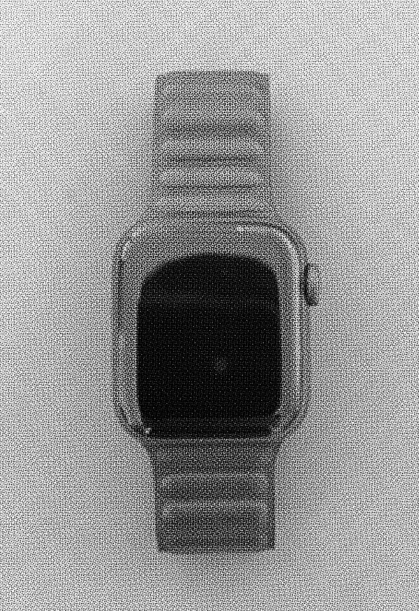

One of my guiltiest pleasures, in general, is min-maxing. Ordinarily the term applies to optimizing video game skills and loadouts, but I've found a real-life equivalent in EDC, or "every day carry". EDC is often associated with doomsday preppers and civilian militia culture, given that the origin of EDC revolved around firearms. But the definition has grown to include any items a person deems important enough to carry with them every day, suiting that individual's lifestyle. For me, min-maxing comes into the picture when I put together a group of essentials with the lightest total weight and footprint, but maximum possible function.
A knife is one of the worst self-defense weapons you can carry, but it is among the best tools you can carry. I don't see my knife as a weapon. It's a versatile companion that empowers me to modify, fix, or open things in my environment, useful in both mundane situations and in emergencies. The flipper action is easier (and more fun) to deploy than thumb studs, which is why I'm currently carrying this beautiful CIVIVI.
Despite the ubiquity of notes applications on phones, as a writer I still can't imagine myself not carrying a pen. My Zebra mini pen is telescoping, so when it's not extended it barely takes up any space at all.
 
I bought my Apple Watch SE after being hired to my QA/lab manager job. Quick access to a calculator, timer, and podcast controls has improved my quality of life immensely when on the job. And it's always nice to be alerted to incoming messages to my phone the moment I receive them.
I finally found my dream wallet: the black leather Bellroy Note Sleeve. It's slim, sleek, and subtle. Unlike most bifold wallets, you load cards vertically instead of horizontally. It's also RFID blocking, has room for cash, and you can store extra cards in a hidden pocket accessible via pull tab.


My Nanobag is my favorite reusable shopping bag. It weighs only about 20g and fits in the palm of my hand, but can hold around 60lbs worth of stuff. There are few other bags out there with that kind of capacity in such a tiny form factor.
The Orbitkey Multi Tool is a stainless steel bottle opener, box cutter, flat head screwdriver, multi-gauge hex wrench, pry tool, and file. There's so much function packed into this small addition to my keychain. I use it all the time and it's shown no signs of wear even after a year of regular use.
After much trial and error, I found the ultimate key organizer to reduce the mass of my key chain as much as possible. This key organizer by Slughaus is a very simple two-piece bolt that binds your keys together, separated by rubber o-rings. You could easily make something similar with a trip to the hardware store, but this set by Slughaus came with everything I needed without the hassle.


I store my tiny items in my Topo Designs bag (4.75"w x 3.25"h). The nylon pouch has a hi-vis interior lining so items are easily seen. What I keep in mine: compact mirror, gum, meds, tiny flashlight, BIC mini lighter, hairtie, microfiber cloth, band-aids, spare credit card.
My daily bag of choice has been the Tom Bihn Side Effect for about a year now. Its ballistic nylon, YKK zippers, and seatbelt grade shoulder strap make it extremely durable. It still looks brand new to me and fits all the items listed above in a compact, lowkey, no-nonsense form factor. I have everything I need at a remarkably negligible total weight.
Not pictured: chapstick, hand sanitizer